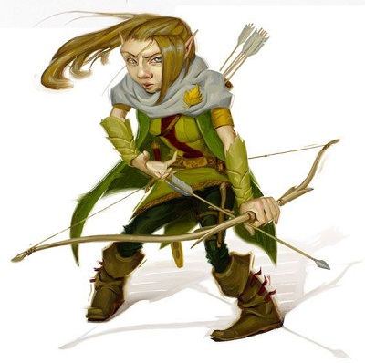
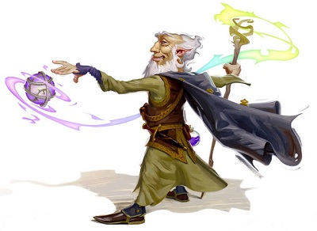

Culture gnome
Les gnomes vieillissent au même rythme que les humains, et la plupart passent à l'âge adulte aux alentours de 40 ans. Ils peuvent toutefois vivre 350 ans, voire jusqu'à 500 ans.
Les fêtes
LES FEUX
Les gnomes ont une fascination particulière pour les flammes et la lumière. Un conte très connu chez les gnomes relate l'histoire de Verpolisch Popplepip, un héros gnome, illusionniste et voleur professionnel. Un jour, Verpolisch s'introduisit chez les dieux et les vit travailler sur une immense forge. Intrigué par les gerbes d'étincelles qui tombaient de leurs grands marteaux, le gnome vola l'étincelle d'une flamme et la remplaça par une illusion. Lorsque les dieux se rendirent compte de la supercherie, il était trop tard, Popplepip était déjà revenu sur le plan matériel. Il devint alors le Père du Feu. Par la suite les gnomes firent preuve de leur légendaire générosité et partagèrent ce trésor avec le reste du monde. C'est en souvenir de cela que chaque gnome a, quelque part dans sa maison, un petit feu, et dans les moments pensifs il s'assoit devant et médite.
Tous les gnomes apprécient les fêtes. Ces célébrations impliquent typiquement beaucoup de musique, des danses, des festins, des conteurs, des spectacles d'illusion, à boire, et des concours de force et d'esprit. Chaque communauté gnome organise généralement de 12 à 15 grandes célébrations par an. Celles-ci ont de multiples prétextes, que se soit pour célébrer les moissons, les événements saisonniers comme le solstice et l'équinoxe, les anniversaires de victoires célèbres ou de découvertes, ou bien même encore des phénomènes météorologiques comme l'éruption d'un volcan ou le souvenir d'une tempête de neige mémorable. Bref, presque n'importe quoi peut servir d'excuse pour organiser une fête. Même les plus petites fêtes sont généralement affaire d'au moins deux jours, le premier étant consacré aux préparatifs tels que les répétitions de spectacles ou la préparation des cuisines, le deuxième jour allant lui suivant toutes probabilités être une longue suite de chansons et de spectacles, entrecoupée par des conteurs d'histoires, et pimentée par maintes occasions de manger et de boire. La bière et le vin couleront en effet librement de l'aube au crépuscule, et durant toute la nuit qui s'en suivra. Les grandes fêtes, elles, durent plusieurs jours ou plusieurs semaines, voire un mois entier pour les plus importantes. Cependant, malgré la durée de ces fêtes, les gnomes sont toujours prêts à reprendre le travail aussitôt les festivités terminées. Ceci est une bonne chose, voire une nécessité, car après un mois entier à faire la fête, il est fréquent que les réserves de nourriture et de boissons soient épuisées. De toutes ces fêtes, celle célébrant l'éclipse totale de la lune, qui a lieu seulement une fois par siècle, est assurément la plus grosse et la plus importante pour les gnomes. Elle dure 66 jours, et se termine le jour de l'éclipse.
Mariage & Famille
Les noces, elles, étonnamment, ne sont pas de grandes occasions sociales, mais plutôt des cérémonies privées auxquelles n'assiste que la famille proche des jeunes couples. Et encore, ceux-ci partent rapidement afin de laisser les jeunes mariés se connaître intimement. La mariée et le marié sont souvent des amis d'enfance, et ils se marient lorsqu'ils deviennent majeurs dans la décennie qui suit. Toutefois, les gnomes qui choisissent ne pas se marier ne sont pas mis au ban de la société, ni même considérés comme bizarres. Les gnomes s'unissent pour la compagnie autant que pour la procréation, le remariage est rare, mais possible, et le divorce est, lui, inconnu. À la différence des humains, une famille avec trois enfants est considérée comme grande chez les gnomes. C'est que, même adulte, les gnomes entretiennent de profonds liens d'amitié avec leurs frères ou sœurs et leurs parents. Ils vivent tous côte à côte, et cela forme un clan. Il est même très commun que des frères et sœurs travaillent ou partent à l'aventure ensemble.
Lois & Tabous
LE NEZ
Le nez (schnozzola en gnome) est comme un symbole de rang social chez les gnomes. Les parents font fièrement remarquer la taille du nez de leurs enfants et font d'enthousiastes pronostiques sur leur future croissance. Les gnomes entreprennent même fréquemment des concours de taille entre membres de clans rivaux, accompagnés de gros paris. Le nez est également un élément déterminant pour la sélection d'un nouveau roi ou d'une reine.
L'amusement et la liberté personnelle règnent sur la société gnome. Cependant, la pierre angulaire de cette liberté est le respect du droit des autres, et ceux qui ne respectent pas ces droits sont considérés comme coupables d'une grave infraction. La responsabilité individuelle est en effet la clé de la compréhension de la culture gnome. Les gnomes considèrent par exemple comme une grande offense le fait d'arriver éméché à une réunion.
Autre exemple : pratiquement tous les gnomes apprécient de boire. La modération n'étant pas un concept de la société gnome, la bière coule à flot dans les fêtes et les rassemblements de clans. Et la plupart du temps, les gnomes qui boivent deviennent joyeux et insouciants, chantent, rient et plaisantent. Cependant, boire de l'alcool fort n'est pas un fait coutumier des gnomes (alors que, au passage, les humains apprécient beaucoup les liqueurs produites par ce petit peuple), et quand un gnome prend quelque chose de ce type, les ennuis arrivent rapidement. Le perturbateur est alors exposé à une sévère critique de la part de toute la communauté lorsqu'il se réveille, souvent avec la pire gueule de bois de sa vie. Cette expérience provoque généralement un changement dans la vie du gnome. Libre de boire autant qu'on le souhaite donc, mais tant que cela ne gêne pas l'amusement des autres.
Les concours font également partie intégrale de toutes fêtes gnomes, et sont sources de fierté. Parier est aussi une pratique commune, mais chacun doit être préparé à perdre. Tricher lors d'un pari est un grave affront, de même que le commerçant qui roule un client sera exclu à vie. Aucun gnome n'acceptera plus de faire des affaires avec lui.
Enfin, alors que les insultes amicales sont ordinaires et fréquemment échangées entre gnomes, il ne faut jamais critiquer la petite taille du nez d'un gnome. Les gnomes qui portent un petit nez sont honteux et se considèrent déjà comme maudit, ce ne serait rien de moins que de la cruauté que de les ridiculiser encore plus pour ce manque de générosité de la nature.
Émotions & Humour
Les gnomes sont des créatures très émotives, promptes au rire et la joie, mais aussi qui pleurent beaucoup et qui sont sensibles au chagrin. On reconnaît facilement un groupe de mineurs gnomes d'un groupe de nains à leurs rires et à leurs chansons, mais lorsqu'ils ont de la peine, comme pour la mort d'un ami ou d'un parent, les gnomes exposent aussi ouvertement leur chagrin. Cependant, ces humeurs passent rapidement, et souvent ce qui a commencé dans une ambiance funèbre se termine par une bonne fête. Contrairement aux nains, les gnomes ne cachent pas leurs sentiments d'affection et d'amour. Les étreintes sont fréquentes entre amis ou époux.
Les gnomes sont célèbres, ou peut-être redoutés, pour leur sens sarcastique de l'humour. Tous aiment les farces, et il peut être troublant de voir un gnome décider d'exprimer son amitié ou son affection à un non gnome en faisant de lui la cible privilégiée de ces tours. Il est toutefois mal vu de faire une plaisanterie qui blesse quelqu'un. Tout l'art de la farce consiste à étonner sa victime, ce qui faisant la rend ridicule. D'une certaine manière, la pratique de la plaisanterie chez les gnomes remplace la violence de beaucoup d'autres cultures. Deux gnomes qui ont un différent se lanceront plutôt chacun dans l'élaboration d'un mécanisme piégé afin de prouver à l'autre qui est le plus astucieux, plutôt que d'en venir aux mains. Les gnomes suivent en cela la doctrine de leur dieu, Garl Brilledor, qui considère comme un acte plus courageux de faire passer un ennemi pour un idiot aux yeux de ses alliés plutôt que de le tuer.
L'alimentation
Les gnomes apprécient énormément la boisson et la nourriture, mais leur éventail est beaucoup moins ample que celui des halfelins ou des humains. Aucune communauté gnome, par exemple, n'utilise la fermentation pour faire du pain ou pour brasser. Ils ne font pas de fromage de vache et ne consomment pas de beurre. Le sucre est inexistant dans leur alimentation, et ils évitent les douceurs tels les gâteaux ou les bonbons. De même, les épices et les sauces sont rarement employées dans les recettes gnomes. Toutefois, ce que les gnomes cuisinent, ils le cuisinent bien. Ils sont par exemple excellents pour préparer des coqs sauvages ou pour utiliser les produits naturels de leur environnement en salades ou plats chauds. En fait, les gnomes adorent le sel et les plats salés en général, la viande par exemple. Ce goût du sel leur permet également de conserver durablement la nourriture. Leurs fruits préférés sont les pommes et les cerises. Côté boisson, les brasseurs gnomes sont compétents, mais ne rivalisent toutefois pas avec leurs homologues humains ou nains.
Les gemmes
Les gnomes adorent les gemmes à un tel stade qu'il est difficile pour les non gnomes de comprendre cet attachement passionnel. Tout gnome digne de ce nom possède une petite gemme qu'il ou qu'elle porte en permanence, la touchant fréquemment, ou la caressant quand il s'ennuie. Chaque village gnome possède quelques pierres précieuses particulièrement splendides, chacune accompagnée d'une légende, et qui appartiennent à la communauté entière. Les gemmes enchantées sont considérées par les gnomes magiciens comme les plus beaux objets magiques qui puissent être.
Le domaine artistique de prédilection des gnomes est donc bien sûr la taille et le montage des pierres précieuses. Les bijoutiers gnomes sont d'ailleurs aussi habiles comme artisans que comme commerçants. Chaque type de gnomes a ses affinités (le diamant pour les gnomes des roches, le rubis pour ceux des profondeurs, l'émeraude pour les gnomes des forêts), mais un artisan gnome qui se respecte est capable de travailler n'importe quel type de pierre. Leur travail ne se borne pas seulement à tailler, les bijoutiers gnomes sont capables de conceptions très créatives, et sont souvent à l'origine de par le monde des couronnes royales, des sceptres et des sculptures décoratives les plus élégants.
La magie
La première magie des gnomes, bien sûr, est l'illusion. Alors que la magie profane est dominée par les elfes, qui en seraient les inventeurs, l'illusion est un domaine développé à la base par les gnomes eux-mêmes. Et repris par tous les magiciens depuis. Son usage est multiple et affecte tous les aspects de vie quotidienne, de l'art à l'idylle, en passant par la guerre. Un amant pourrait courtiser sa bien-aimée avec un message porté par un sort de songe par exemple. Pour les gnomes, la magie illusoire est un mode de vie, pas quelque chose qui sert à rendre la vie plus facile. Les illusions sont également constamment employées pour faire des farces. Mais les gnomes sont plus habiles à reconnaître les illusions que la plupart des autres races, donc les farces illusoires à leur encontre doivent être subtiles et soigneusement planifiées pour réussir.
Le commerce
L'envie de créer est si forte chez les gnomes que ceux-ci échangent régulièrement de splendides bijoux contre des pierres précieuses brutes, et les commerçants gnomes sont prêts à entreprendre de longs voyages pour cela. Cependant, les gemmes ne sont pas les seules choses que les gnomes recherchent. Le sel est une nécessité pour eux, et s'il n'y a pas de sources naturelles disponibles chez eux, ils n'hésiteront pas à aller le chercher, où qu'il se trouve. Les armes, le tissu, et l'acier brut ne sont généralement pas produits par les gnomes, est font l'objet d'échanges contre de la viande tendre, de la farine sombre ou de l'alcool.
Les animaux
Une communauté gnome est généralement gardée par plusieurs mammifères. Dans le cas des gnomes des forêts, ce sont principalement des créatures vivant dans des terriers. Parmi les compagnons des gnomes les plus courants, citons les blaireaux, les gloutons et les belettes, de taille normale ou géante. En échange du bon traitement que leur donnent les gnomes, ces animaux établissent leur résidence près de celles des gnomes. Ce ne sont pas des animaux domestiques ou dressés, au sens que les humains donnent à ces mots, ce sont simplement des alliés. Ils servent de sentinelles, portant rapidement l'alerte lorsqu'un étranger pénètre dans leur secteur, et combattront sauvagement au côté des gnomes si la communauté est attaquée. Les histoires que l'on raconte aux plus jeunes parlent fréquemment d'animaux portant secours à des gnomes.
Les voyages
Les gnomes sont souvent possédés par un fort désir d'errer. Leur curiosité naturelle les mène constamment à se demander ce qu'il y a au-delà de la prochaine colline ou de l'autre côté d'une mer... ou bien encore au fond de ce trou sur le versant de cette colline. Une autre motivation pour voyager est aussi de trouver la gemme parfaite. Une histoire de riches veines de rubis, de diamants ou d'émeraudes, décidera souvent un groupe entier de gnomes de prendre la route, même si celle-ci sera longue et dangereuse. Malgré leur nature réservée et le soin qu'ils portent à cacher l'emplacements exacts de leurs communautés, les gnomes sont tout à fait disposés à se faire des amis chez d'autres races si ceux-ci prouvent qu'ils sont digne de leur amitié. Combien de jeunes gnomes ont écouté les yeux écarquillés un chevalier humain leur parler de grands châteaux ou un marchand leur décrire les merveilles d'un grand marché. Ces gnomes ensuite grandissent avec le désir de connaître ces lieux ou ces choses, et personne n'est surpris quand, lorsqu'ils atteignent l'âge adulte, ils emballent leurs affaires et prennent la route. Enfin, la bienveillance des gnomes amène souvent des groupes à prendre la route pour aller aider un ami qui a des ennuis.
Traduit par blueace